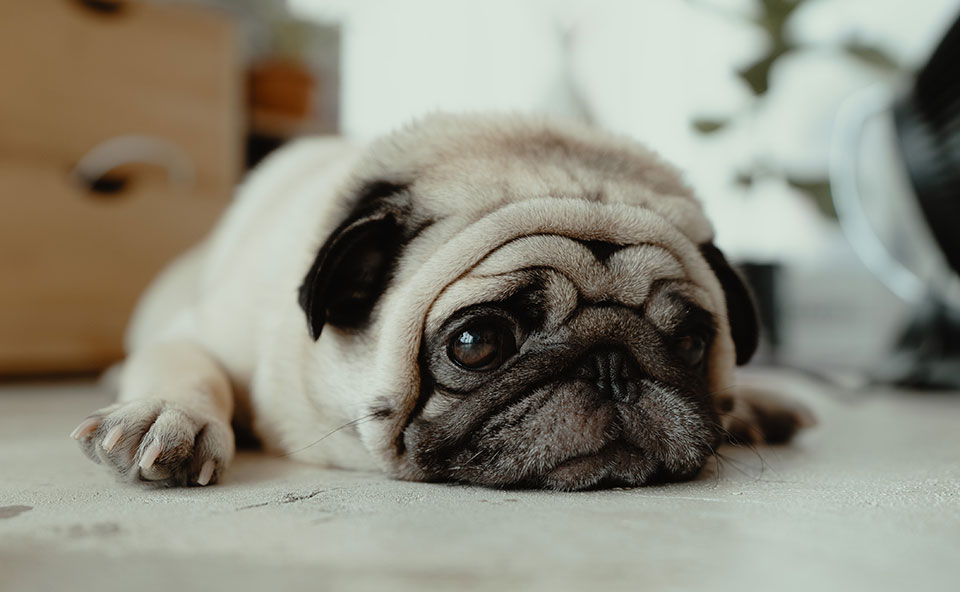
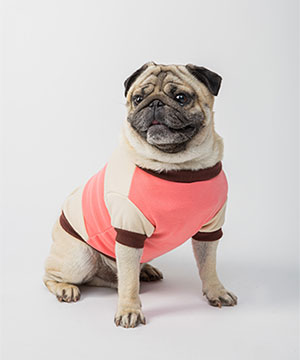

THE PUG ESSENTIALS
So you're thinking about adopting a Pug? Pugs are a funny, loving, and loyal breed. Once you have a Pug's love, it will remain by your side for all their life! Literally. Well here are some important things you might want to know about the breed before you adopt. Read below for some helpful tips!
HEALTH+
The Pug’s dark, appealing eyes are one of his main attractions, but also one of his vulnerable spots. Eye problems including corneal ulcers and dry eye have been known to occur. Like all flat-faced breeds, Pugs sometimes experience breathing problems and do poorly in sunny, hot, or humid weather.
NUTRITION+
The Pug should do well on a high-quality dog food, whether commercially manufactured or home-prepared with your veterinarian’s supervision and approval. Any diet should be appropriate to the dog’s age (puppy, adult, or senior). Pugs live to eat and are prone to obesity, so watch your dog’s calorie consumption and weight level. , so watch your dog’s calorie consumption and weight level. Treats can be an important aid in training, but giving too many can cause obesity. Learn about which human foods are safe for dogs, and which are not. Check with your vet if you have any concerns about your dog’s weight or diet. Clean, fresh water should be available at all times.

GROOMING+
The Pug’s short, smooth, glossy coat needs minimal maintenance, but it does shed. Weekly brushing with a medium-bristle brush, a rubber grooming mitt, or a hound glove will help to remove the loose hair and help keep him looking his best. Pugs don’t need to be bathed unless they happen to get into something particularly messy or start to get a doggy odor. The Pug’s nails should be trimmed regularly, as overly long nails can cause him discomfort